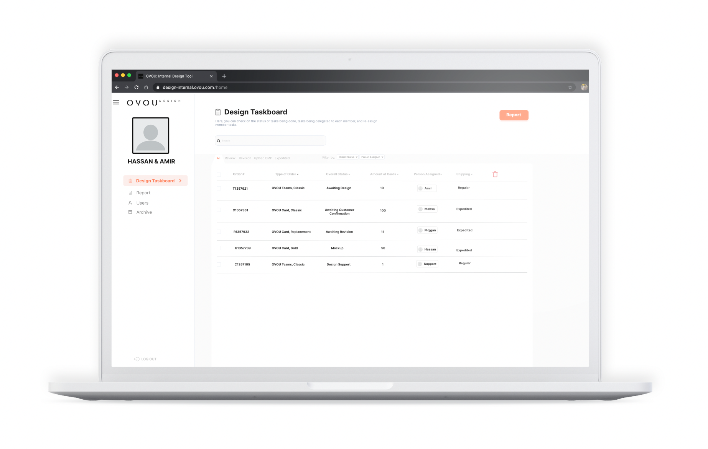

UX Designer, UX Researcher
OVOU Back-Office UX Concept
Creating a communication platform for 3 teams in different regions to communicate in order to help expedite the manufacturing process of digital business cards.
Read Case Study →
Read Case Study →
UX Researcher, UI/UX Designer
The Urban Guide (TUG)
Combining urban exploring and cultural immersion to make users learn more about the world and their community.
Read Case Study →
Read Case Study →
UX Researcher - User Interview & Survey Analysis
Audiobook Club
Connecting Audiobook Listeners all around the world through audiobook recommendations and commentary.
Read Case Study →
Read Case Study →

UX Researcher, Project Manager, Brainwriting Moderator
Mind-A-Log
Assisting troubled youth with anxiety and depression using mood trackers, self-help articles, and connecting them to professional resources.
Read Case Study →
Read Case Study →